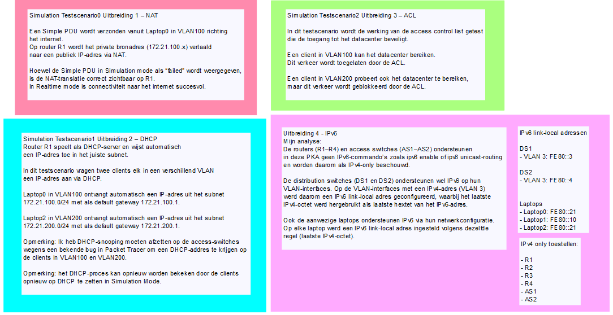

Cisco Project
In dit grote Cisco project heb ik samen met 3 andere teamleden het Cisco basisbestand omgetoverd tot een indrukwekkend werkende infrastructuur volgens de wensen van de opdracht. Ook heb ik veel moeten documenteren en testen zoals een "actieplan" opstellen en "testplannen" verzinnen. Daarnaast vond er nog een individuele uitbreiding plaats.
Resultaat:
foto 1: Infrastructuur, foto 2: Individuele uitbreiding


Wat heb ik gedaan?
- Poorttoewijzingen correct geplaatst
- OSPF-routering geprogrammeerd
- Portchannels getest
- STP getest
- Port security getest
- DHCP geintegreerd
- ACL's toegevoegd